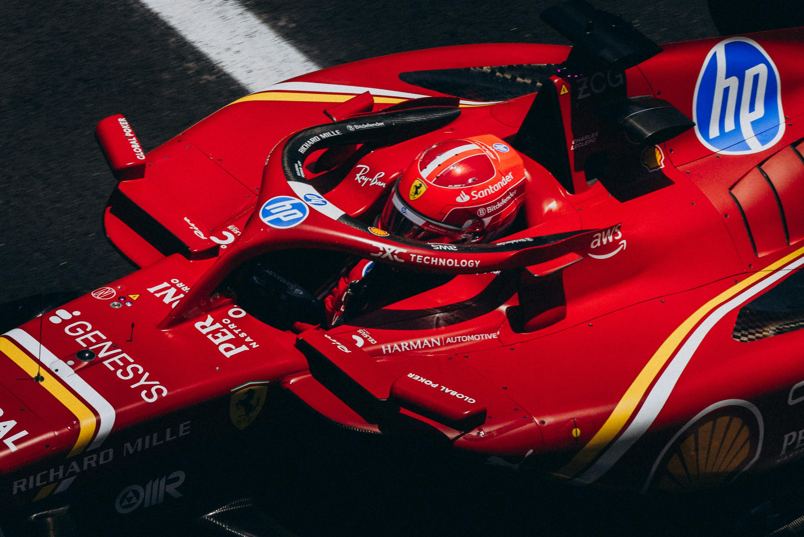
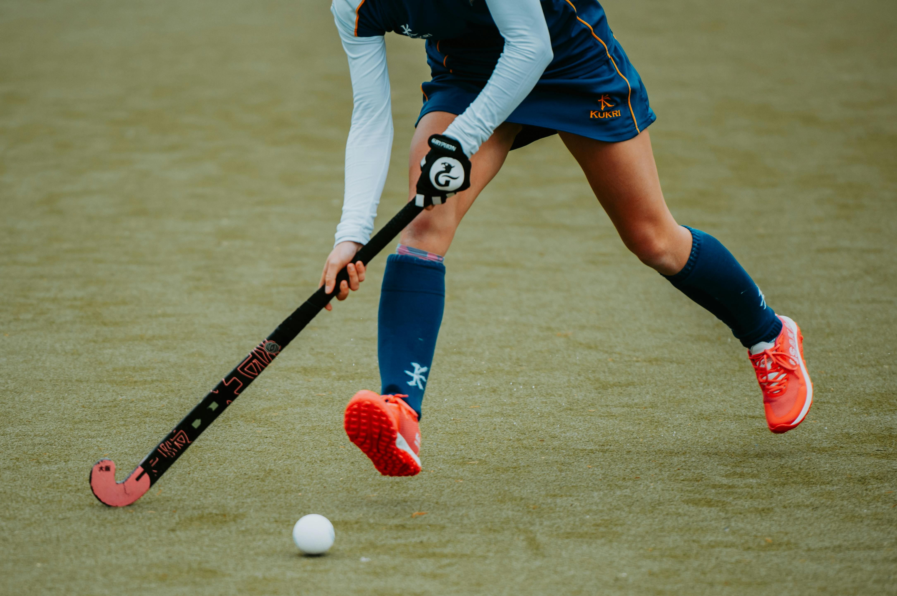

El 22 de enero fue el dia en el que Ferrari volvio para arrancar la pretemporada. Con Hamilton y Leclerc como pilotos titulares ...

Deportes.
Enterate de todos los partidos de Champions League y de las 5 grandes ligasSegui en vivo el Australian Open

Conoce todo acerca de la pretemporada de los Leones y las LeonasSegui el comienzao del campeonato mundial de la categoria reina del automovilismo
"Cuando dicen que soy Dios yo respondo que están equivocados: soy un simple jugador de fútbol. Dios es Dios y yo soy Diego".
-Diego Armando Maradona
Queres estar 100% informado?
Inscribite y activa las notificaciones para estar al tanto de todos los deportes alrededor del mundo!